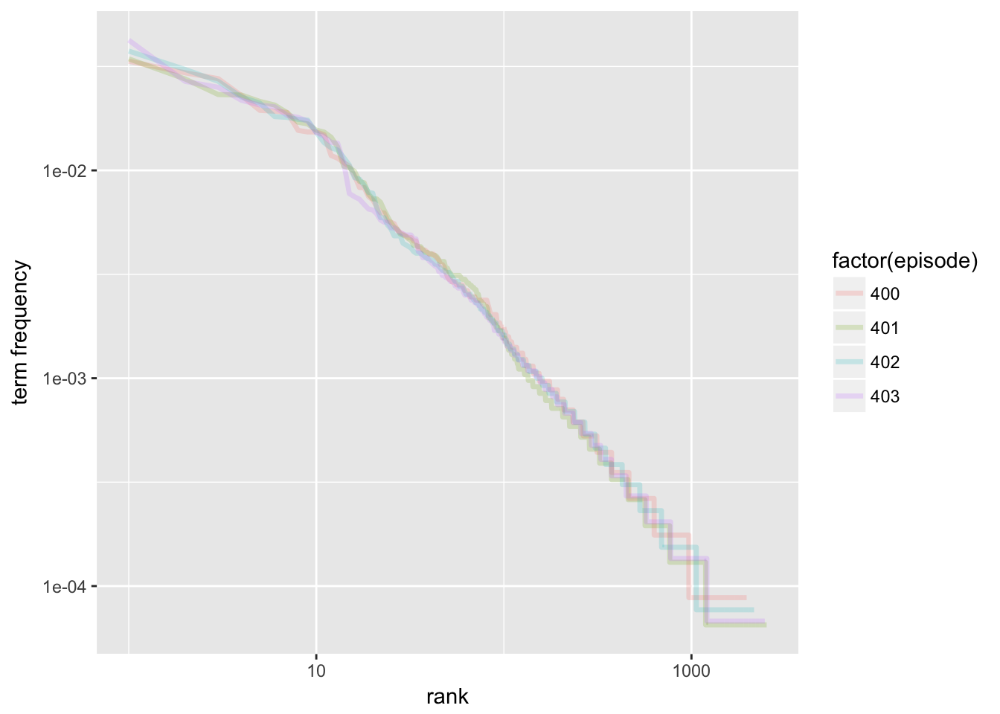
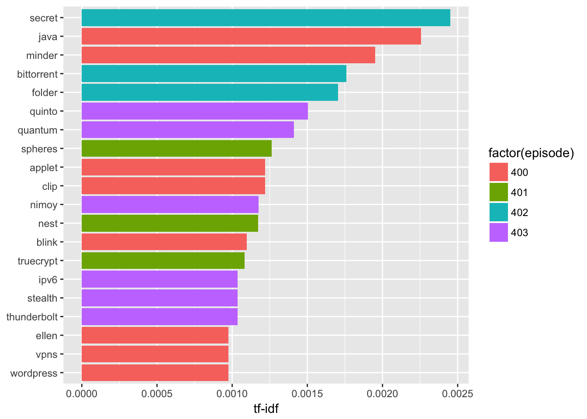
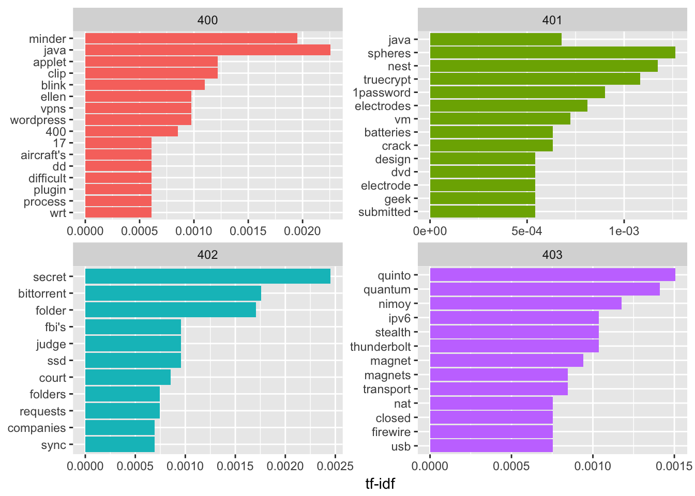

In the Security Now podcast, the hosts Steve Gibson and Leo Laporte often cite episodes that explain certain basic topics. They can never remember which episode covered a certain topic (e.g., how TLS works). As a follow-up to my previous post about text mining with the tidytext package, I decided to use see if I could make it easier to create an index for the series using term frequency and inverse document frequency analysis (tf-idf).
Methods
I again used the tidyverse packages and tidytext by David Robinson. He and Julia Silge wrote the book from which most of these methods came.
library(dplyr)## Warning: Installed Rcpp (0.12.12) different from Rcpp used to build dplyr (0.12.11).
## Please reinstall dplyr to avoid random crashes or undefined behavior.##
## Attaching package: 'dplyr'## The following objects are masked from 'package:stats':
##
## filter, lag## The following objects are masked from 'package:base':
##
## intersect, setdiff, setequal, unionlibrary(tidytext)
library(ggplot2)
library(tidyr)Obtaining Text
I downloaded the episode transcripts from GRC.com.
DIRECTORY <- "~/Dropbox/Mike/securitynow/shows"
# change the i to go from the first show number you want to the last show number. As of 1 July 2017, the most recent show is #618.
for(i in 400:499) {
shortname <- paste0("sn-", i, ".txt")
showname <- paste0("https://www.grc.com/sn/", shortname)
print(shortname)
download.file(showname, destfile = paste0(DIRECTORY, shortname), method = "curl")
}I read each of the transcripts into one tidy data frame.
DIRECTORY <- "~/Dropbox/Mike/securitynow/shows/"
sn_text <- data_frame(linenumber = NA, episode = NA, linetext = NA)
for(i in 400:403) {
sn_text_raw <- readLines(paste0(DIRECTORY, "sn-", i, ".txt"))
sn_text_df <- data_frame(linenumber = 1:length(sn_text_raw),
episode = i,
linetext = sn_text_raw)
sn_text <- bind_rows(sn_text, sn_text_df)
}
sn_text <- sn_text[-1, ]
rm(sn_text_df)
rm(sn_text_raw)Term Frequency
I broke the lines into individual words using unnest_tokens() and counted them. I then counted the total words in each episode.
episode_words <- sn_text %>%
unnest_tokens(word, linetext) %>%
# anti_join(custom_stop_words, by = "word") %>%
count(episode, word, sort = TRUE) %>%
ungroup()
total_words <- episode_words %>%
group_by(episode) %>%
summarize(total = sum(n))
episode_words <- left_join(episode_words, total_words, by = "episode")
episode_words## # A tibble: 9,101 x 4
## episode word n total
## <int> <chr> <int> <int>
## 1 403 the 624 14736
## 2 401 the 529 15367
## 3 402 the 488 13008
## 4 401 and 423 15367
## 5 402 and 398 13008
## 6 403 and 395 14736
## 7 400 the 381 11366
## 8 403 to 370 14736
## 9 401 a 356 15367
## 10 401 i 354 15367
## # ... with 9,091 more rowsIt was not surprising to see that common stop words like “the” accounted for most of the words.
I then calcuated the term frequency (frequency of a word as a percentage of the total number of words in the episode) and sorted by the absolute count.
freq_by_rank <- episode_words %>%
group_by(episode) %>%
mutate(rank = row_number(),
`term frequency` = n/total)
freq_by_rank## # A tibble: 9,101 x 6
## # Groups: episode [4]
## episode word n total rank `term frequency`
## <int> <chr> <int> <int> <int> <dbl>
## 1 403 the 624 14736 1 0.04234528
## 2 401 the 529 15367 1 0.03442442
## 3 402 the 488 13008 1 0.03751538
## 4 401 and 423 15367 2 0.02752652
## 5 402 and 398 13008 2 0.03059656
## 6 403 and 395 14736 2 0.02680510
## 7 400 the 381 11366 1 0.03352103
## 8 403 to 370 14736 3 0.02510858
## 9 401 a 356 15367 3 0.02316653
## 10 401 i 354 15367 4 0.02303638
## # ... with 9,091 more rowsIt’s also possible to plot the log rank and term frequency. This plot appears to obey Zipf’s Law. That is, the term frequency is proportional to its rank. The relationship appears to be:
\[ frequency = {1 \over rank} \]
With a logarithm applied to both sides, we have:
\[ log(frequency) = {-log({rank)}} \] This can be demonstrated in the following plot where I have plotted the log term frequency against its log rank.
freq_by_rank %>%
ggplot(aes(rank, `term frequency`, color = factor(episode))) +
geom_line(size = 1.2, alpha = 0.2) +
scale_x_log10() +
scale_y_log10()
Inverse Document Frequency
The inverse document frequency is a rough rule of thumb that can be used to look at what words are important to a specific document compared to the whole corpus of documents. Idf identifies words that are not evenly distributed across the documents.
It is defined as the log of the number of documents divided by the number of documents containing the term. As a term becomes less frequent, the ratio can increase to the number of total documents. As it becomes more frequent, the ratio can decrease to a minimum of 1 (whose natural log is 0).
\[ idf(term) = ln({n_{documents} \over n_{documents \space containing \space term}}) \] When we multiply idf by term frequency, the result weights the idf for how often the word is seen in that particular document.
The tidytext package contains an bind_tf_idf function that makes it easy to calculate.
episode_words <- episode_words %>%
bind_tf_idf(word, episode, n)
episode_words## # A tibble: 9,101 x 7
## episode word n total tf idf tf_idf
## <int> <chr> <int> <int> <dbl> <dbl> <dbl>
## 1 403 the 624 14736 0.04234528 0 0
## 2 401 the 529 15367 0.03442442 0 0
## 3 402 the 488 13008 0.03751538 0 0
## 4 401 and 423 15367 0.02752652 0 0
## 5 402 and 398 13008 0.03059656 0 0
## 6 403 and 395 14736 0.02680510 0 0
## 7 400 the 381 11366 0.03352103 0 0
## 8 403 to 370 14736 0.02510858 0 0
## 9 401 a 356 15367 0.02316653 0 0
## 10 401 i 354 15367 0.02303638 0 0
## # ... with 9,091 more rowsI arranged the output by descending tf_idf to see what are the words that were different between episodes.
episode_words %>%
select(-total) %>%
arrange(desc(tf_idf))## # A tibble: 9,101 x 6
## episode word n tf idf tf_idf
## <int> <chr> <int> <dbl> <dbl> <dbl>
## 1 402 secret 46 0.0035362854 0.6931472 0.002451166
## 2 400 java 37 0.0032553229 0.6931472 0.002256418
## 3 400 minder 16 0.0014077072 1.3862944 0.001951497
## 4 402 bittorrent 33 0.0025369004 0.6931472 0.001758445
## 5 402 folder 16 0.0012300123 1.3862944 0.001705159
## 6 403 quinto 16 0.0010857763 1.3862944 0.001505206
## 7 403 quantum 15 0.0010179153 1.3862944 0.001411130
## 8 401 spheres 14 0.0009110431 1.3862944 0.001262974
## 9 400 applet 10 0.0008798170 1.3862944 0.001219685
## 10 400 clip 10 0.0008798170 1.3862944 0.001219685
## # ... with 9,091 more rowsplot_episode <- episode_words %>%
arrange(desc(tf_idf)) %>%
mutate(word = factor(word, levels = rev(unique(word))))
plot_episode %>%
top_n(20) %>%
ggplot(aes(word, tf_idf, fill = factor(episode))) +
geom_col() +
labs(x = NULL, y = "tf-idf") +
coord_flip()## Selecting by tf_idf
Looks like episode 403 had a bunch about quantum computing while episode 401 featured stories on TrueCrypt and Nest. Episode 402 seemed to talk about secrets (perhaps Bittorrent Sync).
By episode, we can visualize the top 10 tf_idf words.
plot_episode %>%
group_by(episode) %>%
top_n(10, tf_idf) %>%
ungroup() %>%
mutate(word = reorder(word, tf_idf)) %>%
ggplot(aes(word, tf_idf, fill = factor(episode))) +
geom_col(show.legend = FALSE) +
labs(x = NULL, y = "tf-idf") +
facet_wrap(~episode, ncol = 2, scales = "free") +
coord_flip()
Based on this I thought I could identify which episodes talked the most about any particular topic by seeing which episodes had the highest tf_idf for that word. It ended up being kind of a mess.
sn_text <- data_frame(linenumber = NA, episode = NA, linetext = NA)
for(i in 400:499) {
sn_text_raw <- readLines(paste0(DIRECTORY, "sn-", i, ".txt"))
sn_text_df <- data_frame(linenumber = 1:length(sn_text_raw),
episode = i,
linetext = sn_text_raw)
sn_text <- bind_rows(sn_text, sn_text_df)
}
sn_text <- sn_text[-1, ]
rm(sn_text_df)
rm(sn_text_raw)
episode_words <- sn_text %>%
unnest_tokens(word, linetext) %>%
# anti_join(custom_stop_words, by = "word") %>%
count(episode, word, sort = TRUE) %>%
ungroup()
total_words <- episode_words %>%
group_by(episode) %>%
summarize(total = sum(n))
episode_words <- left_join(episode_words, total_words, by = "episode")
episode_words %>%
bind_tf_idf(word, episode, n) %>%
filter(tf_idf>0, n>15) %>%
group_by(word) %>%
arrange(desc(tf_idf)) %>%
top_n(1) %>%
ungroup() %>%
arrange(desc(tf_idf)) %>%
select(episode, word, n, tf_idf)## Selecting by tf_idf## # A tibble: 657 x 4
## episode word n tf_idf
## <int> <chr> <int> <dbl>
## 1 463 fr 103 0.02151263
## 2 404 brokers 40 0.01546787
## 3 431 radius 54 0.01416449
## 4 404 iyaz 55 0.01228141
## 5 497 lee 65 0.01186939
## 6 497 pat 63 0.01150418
## 7 457 brett 101 0.01087039
## 8 404 bluekai 28 0.01082751
## 9 423 tom 114 0.01066308
## 10 490 enigma 57 0.01019011
## # ... with 647 more rowsAt least we can see that there were some episodes that taked about Radius and Bluekai. Enigma was in episode 490. Scrolling further yields episodes on Sony, Bittorrent Sync, etc. Acxiom came up in episode 404 while pairing (of something or other) must have been big in episode 465.
Discussion
Generating an index by algorithm, at least for Security Now, did not result in a good output. It seems that there is still a lot of manual validation that would be needed to create a useful index.
Conclusion
Tidytext makes it easy to see what words are important to what documents but that doesn’t mean that the result will be meaningful.